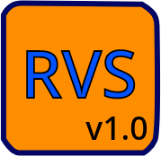

RevanScript (RVS) programming language is a programming language created by Revan Babayev in 2026.
It has a simple and readable syntax.
To execute RevanScript (RVS) code, you need the RevanScript (RVS) program.
This program plays the role of an interpreter.
It explains the RevanScript (RVS) code to the computer and the and the result of the written code is visible.
The C programming language was used to create the interpreter program, and many features are currently being added to the language.
This interpreter program is open source.
You can view the codes and analyze critical errors on GitHub.
You can watch simple examples of this language on the RvCodes9 YouTube channel.
